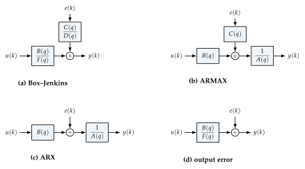

Chapter 6Prediction-error methods for polynomial models
In this chapter we study a particular class of input–output (I/O) models, of course related to \(Y_f(z)=W(z)U(z)\), and the classical way of estimating them: prediction-error methods (PEM). The key question is: what kind of identification problems can we solve via least squares? The answer (ARX models) and its limitations motivate both the more general PEM and, later, subspace methods.
6.1 Input–output models with the delay operator
Recall (Appendix A) that the \(\Z\)-transform of the output of (5.2) is
so that, whenever \(x(0)=0\), \(Y(z)=W(z)U(z)\). For a SISO system (\(p=q=1\)) \(W(z)\) is a proper ratio of polynomials, which can be written in powers of \(z^{-1}\) (Appendix B):
Alternative notations are used in the system identification literature and books. A frequent one is \(y(k)=W(z)u(k)\), which is definitely wrong, since it mixes the complex variable \(z\in\C\) and the time \(k\). The correct way uses the delay (backward shift) operator \(q^{-1}\):
and writes \(y(k)=W(q)u(k)\), where \(W(q)\) is obtained from \(W(z)\) by replacing \(z^{-1}\) with \(q^{-1}\) and is interpreted as an operator acting on signals.
Let \(W(z)=\dfrac{B(z)}{A(z)}=\dfrac{b_0+b_1z^{-1}}{1-a_1z^{-1}}\). In the time domain
i.e. \(y(k)=a_1q^{-1}y(k)+b_0u(k)+b_1q^{-1}u(k)\) and, recalling \(q^{-\tau}f(k)=f(k-\tau)\),
The same result is obtained starting from \(Y(z)=\frac{B(z)}{A(z)}U(z)\), i.e. \(A(z)Y(z)=B(z)U(z)\), \([1-a_1z^{-1}]Y(z)=[b_0+b_1z^{-1}]U(z)\), and taking the inverse \(\Z\)-transform with \(\Z^{-1}\{z^{-1}Y(z)\}=y(k-1)\) (zero initial conditions).
It makes sense to write the I/O model of an LTI system adopting the time domain with the delay operator \(q^{-1}\):
6.2 Polynomial models with noise
Consider the model \(y(k)=W(q)u(k)\) with \(W(q)=B(q)/A(q)\) and, from now on, focus on the SISO case \(p=q=1\). Differences between the model classes arise when one wants to model the noise. The general LTI I/O model with noise is
where \(e(k)\) is a white random sequence with \(\E(e(k))=0\) and \(\E(e(i)e(j))=\lambda_e\delta_{ij}\) (the notes take \(\lambda_e=1\)), \(v(k)=H(q)e(k)\) is the (colored) disturbance, and \(H(q)\) is monic (\(H(q)=1+h_1q^{-1}+\cdots\)), stable and with a stable inverse. Both \(W\) and \(H\) are rational:
According to how \(W(q)\) and \(H(q)\) are structured one has some popular model classes (Figure 6.1 and Table 6.1); these are called polynomial models, since they are linear models described by polynomials in \(q^{-1}\).
Box–Jenkins (BJ), the general one: \(y(k)=\dfrac{B(q)}{F(q)}u(k)+\dfrac{C(q)}{D(q)}e(k)\); plant and noise dynamics are independently parametrized.
ARMAX (AutoRegressive Moving-Average model with eXogenous input): \(F(q)=D(q)=A(q)\),
\[ y(k)=\frac{B(q)}{A(q)}u(k)+\frac{C(q)}{A(q)}e(k)\iff A(q)y(k)=B(q)u(k)+C(q)e(k), \]i.e. \([1-a_1q^{-1}-\cdots]y(k)=[b_0+b_1q^{-1}+\cdots]u(k)+[1+c_1q^{-1}+\cdots]e(k)\) and
\begin{multline*} y(k)=\underbrace{a_1y(k-1)+\cdots+a_ny(k-n)}_{\text{autoregressive part}} +\underbrace{b_0u(k)+\cdots+b_nu(k-n)}_{\text{exogenous input}}\\ +\underbrace{e(k)+c_1e(k-1)+\cdots+c_{n_c}e(k-n_c)}_{\text{moving average}} . \end{multline*}ARX: \(C(q)=1\) in ARMAX (i.e. \(C=1\), \(D=F=A\) in BJ): \(y(k)=\dfrac{B(q)}{A(q)}u(k)+\dfrac1{A(q)}e(k)\iff A(q)y(k)=B(q)u(k)+e(k)\).
Output error (OE): \(H(q)=1\), \(y(k)=\dfrac{B(q)}{F(q)}u(k)+e(k)\): the noise is white and additive on the output (measurement noise).

| model | \(W(q)\) | \(H(q)\) | predictor linear in \(\theta\)? | MATLAB |
|---|---|---|---|---|
| FIR | \(B\) | \(1\) | yes | arx with \(n_a=0\) |
| ARX | \(B/A\) | \(1/A\) | yes | arx(data,[na nb nk]) |
| ARMAX | \(B/A\) | \(C/A\) | no | armax(data,[na nb nc nk]) |
| OE | \(B/F\) | \(1\) | no | oe(data,[nb nf nk]) |
| BJ | \(B/F\) | \(C/D\) | no | bj(data,[nb nc nd nf nk]) |
Sign convention. Following the lecture notes, in this chapter the autoregressive polynomial is written as \(A(q)=1-a_1q^{-1}-\cdots-a_{n_a}q^{-n_a}\), so that the \(a_i\) appear with a plus sign in the difference equation \(y(k)=a_1y(k-1)+\cdots\). MATLAB (and Ljung’s book) use \(A(q)=1+a_1q^{-1}+\cdots+a_{n_a}q^{-n_a}\): the coefficients differ by a sign (Section 6.5). \(C,D,F\) are always written with plus signs.
6.3 ARX models and their one-step-ahead predictor
For an ARX model (\(C=1\) and \(D=F=A\) in BJ, or \(C=1\) in ARMAX),
that is,
We have written this for \(m=n\) (numerator and denominator of the same degree, with a direct feedthrough term \(b_0\)); in other references you may find \(m=n-1\), in which case \(B(q)u(k)=b_1u(k-1)+\cdots+b_nu(k-n)\) (strictly proper model).
What we say now is that the one-step predictor for the value of \(y(k)\), given the measurements up to \(k-1\) (with the exception of \(u(k)\) if \(m=n\)), is
because the term \(e(k)\) in (6.2) is independent of all the data up to time \(k-1\) and the best guess for the noise is its mean, \(\E(e(k))=0\). (It is a proper one-step-ahead prediction for \(b_0=0\).) The parameters are collected in
Whenever we fix \(\theta\) and put in the predictor the known values (training data) \(y(k-1),\dots,y(k-n)\), \(u(k),\dots,u(k-n)\), we end up with the value of the one-step predictor \(\hat y(k|k-1)\). Crucially, (6.3) is linear in \(\theta\):
where \(\varphi(k)\) is the regressor vector. What is left to do is setting up an optimization procedure to minimize an index of error and select the best \(\hat\theta\).
6.4 The prediction-error method for ARX models
The prediction error is
and prediction-error methods choose \(\hat\theta\) by minimizing its sample variance:
Define
So, equivalently, with the vector of residuals \(Y_{1:N}-\Phi_{1:N}\theta\),
which is exactly the least-squares problem of Chapter 4. From \(\hat\theta=[\hat a_1\cdots\hat a_n\mid\hat b_0\cdots\hat b_n]\T\) we obtain \(\hat A(q)\) and \(\hat B(q)\).
Collect a training dataset on your system (possibly also a testing dataset to validate the model).
Build \(Y_{1:N}\) and
\[ \Phi_{1:N}=\bmat{\varphi\T(1)\\ \vdots\\ \varphi\T(N)} =\bmat{y(0)&0&\cdots&0 & u(1)&u(0)&\cdots&0\\ y(1)&y(0)&\cdots&0 & u(2)&u(1)&\cdots&0\\ \vdots&\vdots&&\vdots&\vdots&\vdots&&\vdots\\ y(N-1)&y(N-2)&\cdots&y(N-n) & u(N)&u(N-1)&\cdots&u(N-n)}, \]where samples before time \(0\) are set to zero; alternatively (and preferably), start the regression at \(k=n\), so that only measured samples appear in \(\Phi\).
Solve \(\hat\theta=\Phi_{1:N}\pinvsym Y_{1:N}\) (in practice with a QR-based solver) and form \(\hat A(q)\), \(\hat B(q)\).
Identifiability. \(\hat\theta\) is unique iff \(\Phi_{1:N}\) is full column rank, i.e. \(\Phi\T\Phi\) nonsingular, so that \(\Phi\pinvsym=(\Phi\T\Phi)^{-1}\Phi\T\) can be formed. This is where persistency of excitation (Definition 5.1) enters: it can be proven that, if the noise \(e\) has positive variance and the system is operated in open loop, \(\Phi_{1:N}\T\Phi_{1:N}\) is nonsingular (for \(N\) large) when \(u\) is persistently exciting of order equal to the number \(n_b\) of coefficients of \(B(q)\); in the noise-free case the order must be at least \(n_a+n_b\) (the total number of parameters) [6]. To form the regressor we have to guess (or to know) the orders of \(A(q)\) and \(B(q)\) (and the delay): Section 6.6.
Data are generated by the ARX system \(y(k)=1.5y(k-1)-0.7y(k-2)+u(k-1)+0.5u(k-2)+e(k)\) (poles \(0.75\pm0.37j\)), with \(u\) white Gaussian of unit variance and \(e\) white with standard deviation \(0.3\). The LS estimates for three data lengths are:
| \(a_1\) | \(a_2\) | \(b_1\) | \(b_2\) | |
|---|---|---|---|---|
| true | \(1.5\) | \(-0.7\) | \(1\) | \(0.5\) |
| \(N=50\) | \(1.510\) | \(-0.697\) | \(1.041\) | \(0.495\) |
| \(N=500\) | \(1.491\) | \(-0.695\) | \(1.008\) | \(0.491\) |
| \(N=5000\) | \(1.500\) | \(-0.700\) | \(1.001\) | \(0.498\) |
The estimates converge to the true values (consistency) and \(\kappa(\Phi)\approx8\): the problem is well conditioned. On fresh validation data the one-step-ahead prediction has \(\mathrm{RMSE}=0.298\), essentially the noise level (\(0.3\)), whereas the free-run simulation \(\hat y=\hat W(q)u\) has \(\mathrm{RMSE}=0.903\): the difference is the contribution of the noise filtered by \(1/A(q)\), which a pure simulation cannot reproduce.
6.5 ARX models in MATLAB
In MATLAB the ARX model is written as \(A(q)y(k)=B(q)u(k-n_k)+e(k)\) with
(note the plus signs in \(A\)), and another parameter, the dead time \(n_k\), the pure delay between input and output:
An ARX model in MATLAB is thus defined by two vectors of coefficients,
\(B=[b_1\;b_2\;\cdots\;b_{n_b}]\) (\(n_b\) parameters) and \(A=[1\;a_1\;\cdots\;a_{n_a}]\) (\(n_a\)
parameters); \(n_b\) is the number of coefficients of \(B(q)\), i.e. the number of zeros of
\(B\) plus one (not the number of zeros). The command idpoly(A,B) creates the model,
and arx(data,[na nb nk]) estimates it.
(i) \(W(q)=\dfrac{q^{-1}+2q^{-2}}{1+q^{-1}-q^{-2}}=\dfrac{q^{-1}(1+2q^{-1})}{1+q^{-1}-q^{-2}}
=q^{-1}\dfrac{b_1+b_2q^{-1}}{1+a_1q^{-1}+a_2q^{-2}}\) with \(b_1=1\), \(b_2=2\), \(a_1=1\), \(a_2=-1\):
\(n_k=1\), \(n_b=2\), \(n_a=2\). You will define the model with B = [0 1 2] (the leading
zero encodes the delay) and A = [1 1 -1].
(ii) \(W(q)=\dfrac{2-q^{-1}}{1+2q^{-1}+q^{-2}}=\dfrac{b_1+b_2q^{-1}}{1+a_1q^{-1}+a_2q^{-2}}\):
\(n_k=0\), \(n_b=2\), \(n_a=2\), B = [2 -1], A = [1 2 1].
In the convention of the notes the second model reads \(y(k)=-2y(k-1)-y(k-2)+2u(k)-u(k-1)+e(k)\), i.e. \(a_1^{\text{notes}}=-2\), \(a_2^{\text{notes}}=-1\).
6.6 Model-order selection criteria
Some model-selection criteria are commonly adopted (also by MATLAB). Define \(d\) the size of the regressor (i.e. the number of parameters to be estimated), \(N\) the cardinality of the training dataset and
the loss function evaluated on the training data. One chooses the model (the order) that minimizes:
All criteria add to the training loss (which always decreases with \(d\)) a penalty that grows with the number of parameters. FPE is an estimate of the prediction-error variance that the model would have on new data; AIC and FPE are asymptotically equivalent; MDL penalizes more heavily (factor \(\ln N\) instead of \(2\)) and tends to select more parsimonious models (it is consistent: it selects the true order with probability one as \(N\to\infty\) when the true system is in the model class).
Common approach.
RMSE/NRMSE/FIT on testing data, whenever validation can be properly conducted on data unseen during the estimation (training dataset \(\neq\) testing dataset);
AIC, FPE, MDL if the choice has to be made on the same dataset used for training (e.g. because data are scarce).
6.7 Beyond least squares: why more advanced methods are needed
The ARX model is so popular because its predictor is linear in \(\theta\) and the PEM reduces to linear least squares, with a unique, closed-form solution. For the other model classes this is not the case.
The general one-step-ahead predictor. For (6.1) with \(H\) monic and inversely stable, \(e(k)=H^{-1}(q)[y(k)-W(q)u(k)]\) and \(y(k)=W(q)u(k)+[H(q)-1]e(k)+e(k)\), where \([H(q)-1]e(k)\) only depends on past noise samples. Replacing \(e(k)\) by its mean,
For ARX (\(W=B/A\), \(H=1/A\)) this is (6.3). For the other structures:
and the prediction error depends nonlinearly on the parameters appearing in the denominators (\(C\), \(F\), \(D\)). The PEM cost \(V_N(\theta)=\frac1N\sum\varepsilon^2(k,\theta)\) must then be minimized iteratively (Gauss–Newton or Levenberg–Marquardt), with the risk of local minima and the need of good initial estimates (typically provided by ARX or subspace methods, Chapter 8). For ARMAX, a classical approximation is the pseudo-linear regression (extended least squares), in which the unknown \(e(k-i)\) in the regressor are replaced by the residuals of the previous iteration.
Least squares on the wrong model class is biased. If the data are not generated by an ARX system, the ARX least-squares estimate is in general biased, even for \(N\to\infty\). Suppose the true system is OE, \(y=\frac BFu+e\). Multiplying by \(F\),
which has the ARX form but with the equation error \(F(q)e(k)=e(k)+f_1e(k-1)+\cdots\), which is correlated with the regressors \(y(k-1),y(k-2),\dots\) (they contain \(e(k-1),e(k-2),\dots\)). The normal equations then converge to \(\E[\varphi\varphi\T]\theta^*=\E[\varphi y]\neq\E[\varphi\varphi\T]\theta_0\).
Data are generated by the OE system \(y(k)=\dfrac{q^{-1}+0.5q^{-2}}{1-1.5q^{-1}+0.7q^{-2}}u(k)+e(k)\), with \(u\) white of unit variance, \(e\) white with standard deviation \(0.5\), \(N=500\). Over \(100\) Monte Carlo runs we compare the ARX least-squares estimate (with \(n_a=n_b=2\), \(n_k=1\)) and the PEM estimate of the OE model (nonlinear LS on the simulation error, initialized with the ARX estimate). Coefficients are reported as \(F(q)=1+f_1q^{-1}+f_2q^{-2}\):
| \(f_1\) | \(f_2\) | \(b_1\) | \(b_2\) | |
|---|---|---|---|---|
| true | \(-1.500\) | \(0.700\) | \(1.000\) | \(0.500\) |
| ARX–LS (mean \(\pm\) std) | \(-1.330\pm0.023\) | \(0.540\pm0.021\) | \(0.995\pm0.044\) | \(0.670\pm0.048\) |
| PEM–OE (mean \(\pm\) std) | \(-1.500\pm0.004\) | \(0.700\pm0.003\) | \(1.000\pm0.018\) | \(0.501\pm0.025\) |
The LS estimates are systematically wrong (the bias is many standard deviations), while the PEM estimate of the correct model class is unbiased and even less variable. This is the motivation to the need of using something more advanced than ordinary least squares.
These limitations (nonlinear optimization for all structures but ARX, the need to choose many orders \(n_a,n_b,n_c,n_d,n_f,n_k\), the difficult parametrization of MIMO polynomial models, and the fact that the direct state-space model estimation is not built into the methodology) motivate the subspace approach of Chapters 7 and 8, which estimates MIMO state-space models with SVDs and linear least squares only.
6.8 Exercises
Exercise 6.1. Write the ARX regression (6.4) for \(n_a=2\), \(n_b=3\), \(n_k=2\) and give the dimensions of \(\Phi_{1:N}\).
Exercise 6.2. Derive the one-step-ahead predictor of the ARMAX model \(y(k)=a\,y(k-1)+b\,u(k-1)+e(k)+c\,e(k-1)\) and show that it satisfies the recursion \(\hat y(k|k-1)=-c\,\hat y(k-1|k-2)+(a+c)\,y(k-1)+b\,u(k-1)\). Why can it not be written as \(\varphi\T(k)\theta\) with \(\varphi\) built from measured data only?
Exercise 6.3. Using Example 6.4, compute the asymptotic bias of the ARX estimate for a first-order OE system \(y(k)=\frac{b\,q^{-1}}{1+f\,q^{-1}}u(k)+e(k)\) with white \(u\) (variance \(\lambda_u\)) and \(e\) (variance \(\lambda_e\)), and discuss its dependence on the signal-to-noise ratio.
Exercise 6.4. Generate data from an ARX system of order \(3\) and use AIC, FPE, MDL and the testing RMSE to select \(n_a=n_b\in\{1,\dots,6\}\). Repeat for an OE system: which orders are selected now, and why?
6.9 Implementation in MATLAB and Python
The function arx_ls implements Algorithm 6.1 (convention of the notes,
discarding the first samples):
function [a, b, Phi, Yv] = arx_ls(u, y, na, nb, nk)
%ARX_LS Least-squares estimate of a SISO ARX model, lecture-notes convention:
% y(k) = a1 y(k-1) + ... + a_na y(k-na)
% + b1 u(k-nk) + ... + b_nb u(k-nk-nb+1) + e(k),
% i.e. A(q) = 1 - a1 q^-1 - ... - a_na q^-na (MATLAB's arx uses +a_i).
% u, y : column vectors (samples k = 0..N-1)
% The first max(na, nk+nb-1) samples are used only as initial conditions.
N = length(y);
k0 = max(na, nk + nb - 1) + 1; % first usable (1-based) index
Phi = zeros(N - k0 + 1, na + nb);
for k = k0:N
Phi(k-k0+1, :) = [y(k-1:-1:k-na)', u(k-nk:-1:k-nk-nb+1)'];
end
Yv = y(k0:N);
theta = Phi \ Yv; % LS solution (QR based, same as pinv(Phi)*Yv)
a = theta(1:na); b = theta(na+1:end);
end
The script below reproduces Examples 6.2 and 6.4 with core MATLAB only: the PEM for
the OE model is solved with fminsearch on the sum of squared simulation errors
(filter(B,F,u) computes \(\frac{B(q)}{F(q)}u(k)\) with zero initial conditions).
%% Chapter 6 - ARX models by least squares; bias of LS on OE data
randn('seed', 5);
a0 = [1.5; -0.7]; b0 = [1; 0.5]; % A(q) = 1 - 1.5 q^-1 + 0.7 q^-2
Aq = [1 -a0']; Bq = [0 b0']; % B(q) = q^-1 + 0.5 q^-2 (nk = 1)
N = 500; u = randn(N, 1); e = 0.3*randn(N, 1);
y = filter(Bq, Aq, u) + filter(1, Aq, e); % ARX data: A y = B u + e
[a, b, Phi] = arx_ls(u, y, 2, 2, 1);
disp([a b]); fprintf('cond(Phi) = %.2f\n', cond(Phi));
%% One-step-ahead prediction versus free-run simulation on fresh data
uv = randn(200, 1); yv = filter(Bq, Aq, uv) + filter(1, Aq, 0.3*randn(200, 1));
Ahat = [1 -a']; Bhat = [0 b'];
ypred = filter(Bhat, 1, uv) + filter([0 a'], 1, yv); % [1-A(q)]y + B(q)u
ysim = filter(Bhat, Ahat, uv); % W(q)u, no measured y used
fprintf('RMSE prediction %.3f, RMSE simulation %.3f\n', ...
sqrt(mean((yv-ypred).^2)), sqrt(mean((yv-ysim).^2)));
%% Output-error data: y = B/F u + e (white e): ARX-LS becomes biased
F = [1 -1.5 0.7];
MC = 50; th_arx = zeros(MC, 4); th_oe = th_arx;
opts = optimset('TolX', 1e-8, 'TolFun', 1e-10, 'MaxFunEvals', 4000, 'MaxIter', 4000);
for i = 1:MC
u = randn(N, 1);
y = filter(Bq, F, u) + 0.5*randn(N, 1);
[a, b] = arx_ls(u, y, 2, 2, 1);
th_arx(i, :) = [-a' b']; % reported with the (+) convention of F
% PEM for the OE model: minimize sum of squared simulation errors
V = @(th) sum((y - filter([0 th(3:4)], [1 th(1:2)], u)).^2);
th_oe(i, :) = fminsearch(V, th_arx(i, :), opts);
end
disp('true [f1 f2 b1 b2] = [-1.5 0.7 1 0.5]');
disp(['ARX-LS mean: ' num2str(mean(th_arx), 4)]);
disp(['PEM-OE mean: ' num2str(mean(th_oe), 4)]);
With the System Identification Toolbox the same tasks read:
m0 = idpoly([1 -1.5 0.7], [0 1 0.5]); % A = [1 a1 a2] (MATLAB sign), B with nk = 1
ze = iddata(y, u, 1); % estimation data (Ts = 1)
marx = arx(ze, [2 2 1]); % [na nb nk]
moe = oe(ze, [2 2 1]); % [nb nf nk]
mam = armax(ze, [2 2 1 1]); % [na nb nc nk]
mbj = bj(ze, [2 1 1 2 1]); % [nb nc nd nf nk]
V = arxstruc(ze, zv, struc(1:6, 1:6, 1)); % loss for many ARX orders
nn = selstruc(V, 'aic'); % order selection (also 'mdl')
[aic(marx), fpe(marx)]
compare(zv, marx, moe) % simulation on validation data
In Python, the function lfilter of scipy.signal plays the role of MATLAB’s
filter, and the nonlinear PEM is solved with least_squares from
scipy.optimize:
import numpy as np
from scipy.signal import lfilter
from scipy.optimize import least_squares
from sysid import arx_ls
rng = np.random.default_rng(0); N = 500
u = rng.standard_normal(N)
y = lfilter([0, 1, 0.5], [1, -1.5, 0.7], u) + 0.5*rng.standard_normal(N) # OE data
a, b, Phi, Yv = arx_ls(u, y, na=2, nb=2, nk=1) # biased ARX estimate
res = lambda th: y - lfilter(np.r_[0, th[2:]], np.r_[1, th[:2]], u)
th_oe = least_squares(res, np.r_[-a, b]).x # PEM for the OE model
Further Study: asymptotic properties of PEM and instrumental variables
Convergence and consistency. Under mild conditions (quasi-stationary data, stable predictors), \(\hat\theta_N\to\theta^*=\argmin_\theta\bar V(\theta)\) with probability one, where \(\bar V(\theta)=\lim\E\varepsilon^2(k,\theta)\). If the true system belongs to the model class and the data are informative, \(\theta^*=\theta_0\) (consistency). Moreover \(\sqrt N(\hat\theta_N-\theta_0)\) is asymptotically Gaussian with covariance \(\lambda_e\bigl[\E\psi(k)\psi\T(k)\bigr]^{-1}\), \(\psi=-\partial\varepsilon/\partial\theta\), which equals the Cramér–Rao bound for Gaussian noise: PEM is asymptotically efficient [5].
Frequency-domain interpretation of the bias. By Parseval’s theorem, for an open-loop experiment and a fixed noise model \(H_*\),
so the model fit is weighted by the input spectrum divided by the noise-model spectrum. For ARX, \(1/|H|^2=|A|^2\) is a high-pass weighting: ARX models tend to fit high frequencies too much, which explains the bias of Example 6.4 (Ljung, Ch. 8).
Instrumental variables (IV). A way to remove the bias of LS while keeping a linear estimator is to replace the normal equations with \(\bigl(\sum\zeta(k)\varphi\T(k)\bigr)\hat\theta=\sum\zeta(k)y(k)\), where the instruments \(\zeta(k)\) are correlated with \(\varphi(k)\) but uncorrelated with the equation error (e.g. delayed inputs, or the regressor built with a simulated noise-free output). IV estimators are consistent for any colored equation error in open loop, and the same idea appears in subspace methods (PI/PO-MOESP, Chapter 8).